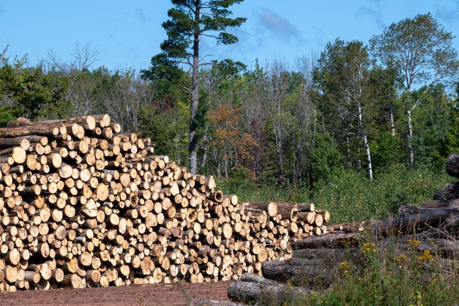

Winnipeg Beach is one of the most beloved cottage communities on the western shore of Lake Winnipeg, sitting roughly 75 kilometres north of the city. For many Manitobans, it is a place of towering mature elms, poplar stands, and spruce trees that have grown unchecked for decades. But as summer winds down and autumn approaches, seasonal property owners often discover that a tree they admired in June has become a serious hazard by September — leaning over a roof, dropping heavy limbs onto a deck, or showing the telltale signs of disease or storm damage. Understanding what professional tree removal winnipeg beach services involve, and when to act, can save you from a much costlier problem once freeze-up arrives.

Why Fall Is the Right Time to Address Hazardous Trees at the Lake
Late summer and early autumn represent the ideal window for tree removal work at Winnipeg Beach and the surrounding communities of Gimli, Sandy Hook, and Lester Beach. Here is why the timing matters:
- Reduced foliage: As leaves begin to drop, arborists have better sightlines into the canopy to assess structural defects, dead wood, and fungal conks that signal internal decay.
- Firmer ground: Heavy equipment can access lakefront lots more reliably before autumn rains soften the soil, reducing the risk of ruts or compaction damage to your lawn.
- Avoiding winter surprise: Ice storms and heavy snow loads are a defining feature of Manitoba winters. A compromised tree left standing through freeze-up is far more likely to fail catastrophically under the weight of ice.
- Crew availability: Winnipeg-area arborists are often fully booked by mid-October as emergency call volumes rise. Booking in September secures your spot before the seasonal rush.
Common Tree Problems at Winnipeg Beach Properties
The Interlake region has its own set of tree health challenges that differ from urban Winnipeg. Properties along the lakeshore deal with high winds off Lake Winnipeg that stress root systems year after year. Sandy, well-drained soils support fast-growing poplars and aspens, but these species are also prone to breaking apart in windstorms. Dutch elm disease, which has devastated urban tree canopies across Winnipeg for decades, continues to be a concern in rural and cottage communities throughout the Interlake as well.
Other common issues include:
- Spruce and pine trees weakened by spruce budworm or pine beetle activity
- Overgrown trees that have lifted septic system infrastructure or encroached on neighbouring lots
- Dead snags left standing from previous storms that present a falling hazard to cottages or vehicles parked underneath
- Trees with co-dominant stems and included bark — a structural weakness that frequently leads to sudden splitting
What Professional Tree Removal at Winnipeg Beach Involves
Because many Winnipeg Beach properties are compact, with cottages and outbuildings close together, removal crews need to plan their approach carefully. A qualified arborist will assess whether a tree can be felled in a single controlled drop or must be dismantled in sections from the top down — a process called sectional removal. This technique is standard on lakefront lots where there is no clear drop zone, and it requires an experienced climber or aerial lift equipment.
Stump grinding is a separate step that most property owners choose to add. Left in place, stumps attract carpenter ants and wood decay fungi, which can eventually affect nearby healthy trees and even structural elements of a cottage. Grinding to well below grade allows you to replant or restore the area to lawn.
For a full overview of what a professional service visit includes — from the initial assessment through debris removal — see our dedicated tree removal services page for complete details on how the process works.
Cost Breakdown: Tree Removal at Winnipeg Beach
Pricing at cottage-country locations often carries a travel or mobilization component on top of the base removal cost. The table below gives a general sense of what to expect, though every job is unique and a site visit is always required for an accurate quote.
| Tree Size | Typical Removal Range | Notes |
|---|---|---|
| Small (under 20 ft) | $350 – $650 | Shrub trees, ornamentals, young poplars |
| Medium (20–50 ft) | $650 – $1,400 | Spruce, mature aspen, mid-size elm |
| Large (50–80 ft) | $1,400 – $2,500 | Mature elm, large spruce, complex access |
| Very large or hazardous | $2,500+ | Dead snags, crane required, difficult site |
| Stump grinding (add-on) | $100 – $300 per stump | Varies with diameter and root complexity |
Travel from Winnipeg to the Winnipeg Beach area typically adds a mobilization fee — ask your contractor about this upfront so there are no surprises on your invoice.
Permits, Regulations, and Lakefront Considerations
For those who also own Winnipeg city properties, the City of Winnipeg — Trees, Boulevards & Urban Forestry resource is a helpful reference for understanding how urban forestry rules work, even if the specific bylaws differ at the lake.
Storm Damage and Insurance Claims
Late summer storms on Lake Winnipeg can be severe. If a tree has been knocked over or heavily damaged by wind, document the damage thoroughly with photographs before any work begins. Your home or cottage insurance policy may cover emergency removal if a fallen tree has caused structural damage. It is worth noting that storm debris can also impact eavestrough systems — large falling branches frequently tear gutters away from fascia boards, so checking your gutters after any significant wind event is wise. If your gutters took damage alongside your trees, Eavestrough Winnipeg is a local resource worth contacting for repair or replacement work.
Choosing a Qualified Arborist for Winnipeg Beach Work
Not every tree service company will travel to the Interlake. When getting quotes, confirm that the crew carries valid liability insurance and Workers Compensation Board coverage — this protects you if anything goes wrong on your property. Ask whether they hold an ISA Certified Arborist credential, which demonstrates a recognized standard of professional knowledge. A reputable company will provide a written estimate, explain the scope of work clearly, and never pressure you to sign on the spot.
Ready to Book Tree Removal at Winnipeg Beach?
Get a free, no-obligation quote from an experienced Winnipeg-area tree removal crew that serves cottage country — before winter locks in the risk.
Get My Free Quote